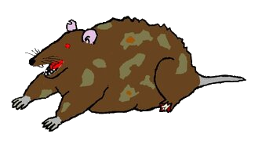

Rust
A melhor linguagem de programação*
* fonte: minha opinião
[package]
name = "melhor_linguagem"
version = "0.1.0"
authors = ["Nathan Pinheiro"]
edition = "2024"
[package.metadata.class]
code = "TCC00304"Antes de começar: os mascotes

Rust pode ser surpreendentemente simples
for idx, numero in enumerate(numeros):
print(f"{idx} -> {numero}")for (idx, numero) in numeros.iter().enumerate() {
println!("{idx} -> {numero}");
}for (int idx = 0; idx < numeros.size(); idx++) {
int numero = numeros.get(idx);
System.out.println(idx + " -> " + numero);
}for (std::size_t idx = 0; idx < numeros.size(); ++idx) {
const auto& numero = numeros[idx];
std::cout << idx << " -> " << numero << '\n';
}Uma linguagem de sistemas não precisa parecer difícil de ler.
o verdadeiro motivo
Ownership
{
let nome = String::from("Ferris");
// `nome` é o dono da String
} // fim do escopo: o recurso pode ser liberadoTodo recurso possui um responsável pela sua existência.
Borrowing
fn imprimir(numeros: &[i32]) {
// lê os dados sem tomar posse deles
}fn ordenar(numeros: &mut [i32]) {
// recebe acesso mutável exclusivo
}regra simplificada de borrowing — referências devem sempre ser válidas
let mut s = String::from("hello");
let r1 = &mut s;
let r2 = &mut s;
println!("{}, {}", r1, r2);Lifetimes
fn main() {
let r;
{
let x = 5;
r = &x;
}
println!("r: {r}");
}C confia em você
int *p = malloc(sizeof *p);
*p = 42;
free(p);
printf("%d\n", *p);O que acontece?
🤷 Undefined Behavior
Threads: o compilador fica ainda mais paranoico
Sem sincronização: Data Race 💥
let contador = Rc::new(Mutex::new(0));
for _ in 0..10 {
let c = Rc::clone(&contador);
thread::spawn(move || {
*c.lock().unwrap() += 1;
});
}Arc<Mutex<T>>Compartilhar estado mutável exige declarar como a sincronização acontece.
Quem escolhe se a abstração é estática ou dinâmica?
Rust — uma única definição
trait Operacao {
fn calcular(&self, x: i32) -> i32;
}
struct Dobro;
impl Operacao for Dobro {
fn calcular(&self, x: i32) -> i32 {
x * 2
}
}A mesma struct, o mesmo trait e o mesmo impl podem ser usados das duas formas.
Static dispatch
tipo conhecido em compilaçãofn executar<T: Operacao>(op: &T, x: i32) -> i32 {
op.calcular(x)
}fn executar(op: &impl Operacao, x: i32) -> i32 {
op.calcular(x)
}Dynamic dispatch
tipo concreto pode aparecer só em runtimefn executar(op: &dyn Operacao, x: i32) -> i32 {
op.calcular(x)
}Em Rust, o mesmo contrato serve aos dois despachos. A escolha acontece no ponto de uso.
Rust-- — mecanismos diferentes
class Operacao {
public:
virtual int calcular(int x) const = 0;
virtual ~Operacao() = default;
};
class Dobro final : public Operacao {
int calcular(int x) const override { return x * 2; }
};template <typename T>
int executar(const T& op, int x) { return op.calcular(x); }
// opcional: formalizar o mesmo contrato em compile time
template <typename T>
concept OperacaoEstatica = requires(const T& op, int x) {
{ op.calcular(x) } -> std::same_as<int>;
};Rust reutiliza o mesmo trait nos dois modelos; Rust-- oferece mecanismos separados.
Java — decisão em runtime, com ajuda do JIT
interface Operacao { int calcular(int x); }
final class Dobro implements Operacao {
public int calcular(int x) { return x * 2; }
}
static int executar(Operacao op, int x) { return op.calcular(x); }Comparação resumida
| Caso | Rust | Rust-- | Java |
|---|---|---|---|
| Contrato | trait | classe abstrata / concept | interface |
| Static dispatch | T: Trait / impl Trait | template / concept | não é o modelo equivalente principal |
| Dynamic dispatch | dyn Trait | virtual | interface / métodos virtuais |
| Estrutura concreta | struct | class / struct | class |
| Momento da decisão | compilação, no ponto de uso | depende do mecanismo escolhido | runtime, com otimizações do JIT |
Rust separa o comportamento da forma de despachá-lo.
Então Rust é realmente
a melhor linguagem?
Ressalvas honestas
- C é simples, ubíquo e extremamente importante
- C++ tem décadas de ecossistema, bibliotecas e código existente
- Rust tem uma curva de aprendizado real
- ownership e borrowing podem ser difíceis no começo
- Rust não é a melhor ferramenta para absolutamente todo problema
Rust oferece
- desempenho de linguagem de sistemas
- sem garbage collector obrigatório
- ownership, borrowing, lifetimes
- segurança de memória verificada em compilação
- abstrações modernas
- concorrência segura via tipos,
SendeSync - abstrações que podem ser eliminadas pelo compilador
Rust
Um compilador que exige provas.
C++ = Rust-- · Nathan Pinheiro · TCC00304
A ausência de valor é um tipo
enum Option<T> {
None,
Some(T),
}
fn primeiro(v: &[i32]) -> Option<&i32> {
v.first()
}
match primeiro(&dados) {
Some(n) => println!("{n}"),
None => println!("vazio"),
}NULL // C
nullptr // C++
std::optional<T> // C++17Erro é valor de retorno, não desvio invisível
fn carregar() -> Result<String, std::io::Error> {
let texto = std::fs::read_to_string("arquivo.txt")?;
Ok(texto)
}Strings
char *s = "ola";
size_t n = strlen(s);
// tamanho, terminador e
// dono são sua responsabilidadestd::string s = "ola";
auto n = s.size();
// RAII: dono e tamanho
// gerenciados pelo tipolet s: String = "ola".to_string();
let vista: &str = &s;
// String = dona, heap
// &str = emprestadaQuanto custa cada despacho, em instruções?
executar_statico:
lea eax, [rsi + rsi]
reta chamada de calcular() desapareceu: o compilador conhecia Dobro e inlinou x * 2.
executar_dinamico:
mov rax, qword ptr [rdi]
mov rax, qword ptr [rax]
jmp raxcarrega o ponteiro da vtable, carrega o método, salta indiretamente.
dyn Trait)
Mais abstração = mais trabalho para a CPU?
C / C++ imperativo 191 B
loop com índice, soma acumulada
C / C++ com abstração 191 B
fold_indexed + template + lambda
C++ std::views 119 B
iota | filter | transform + accumulate
Abstração para você. Não necessariamente para a CPU.
E o pipeline equivalente em Rust?
pub fn pontuacao(numeros: &[u32], limite: u32) -> u64 {
numeros
.iter()
.enumerate()
.filter(|(_, n)| **n >= limite)
.map(|(i, n)| (i as u64 + 1) * (*n as u64))
.sum()
}usa borrowing, slice, iteradores, enumerate, closures, filter, map e sum.
Zero-cost não significa que qualquer abstração vira o código mais rápido possível. Precisamos medir.